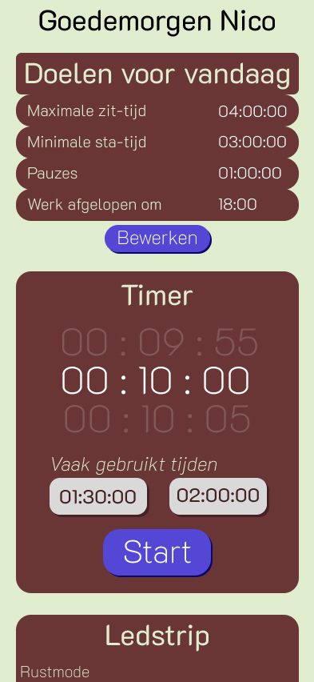
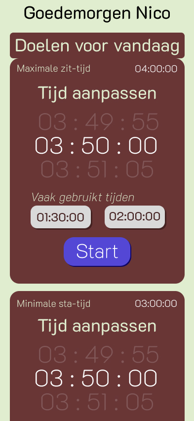
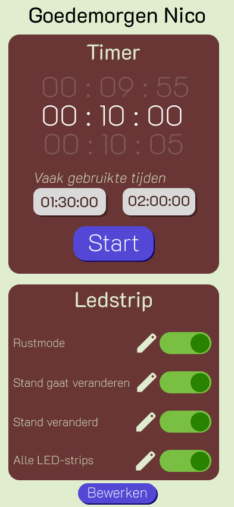
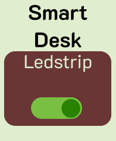

01
DIGITAL
Via de smartphone, smartwatch en het dashboard kan de gebruiker doelen, tijden en voorkeuren instellen en de eigen voortgang bekijken.
De digitale interfaces zijn bewust relatief simpel gehouden. Tijdens het werken wil je niet steeds door verschillende schermen hoeven navigeren of onnodige informatie zien. De interface moet daarom vooral ondersteunen en niet voor extra afleiding zorgen.



